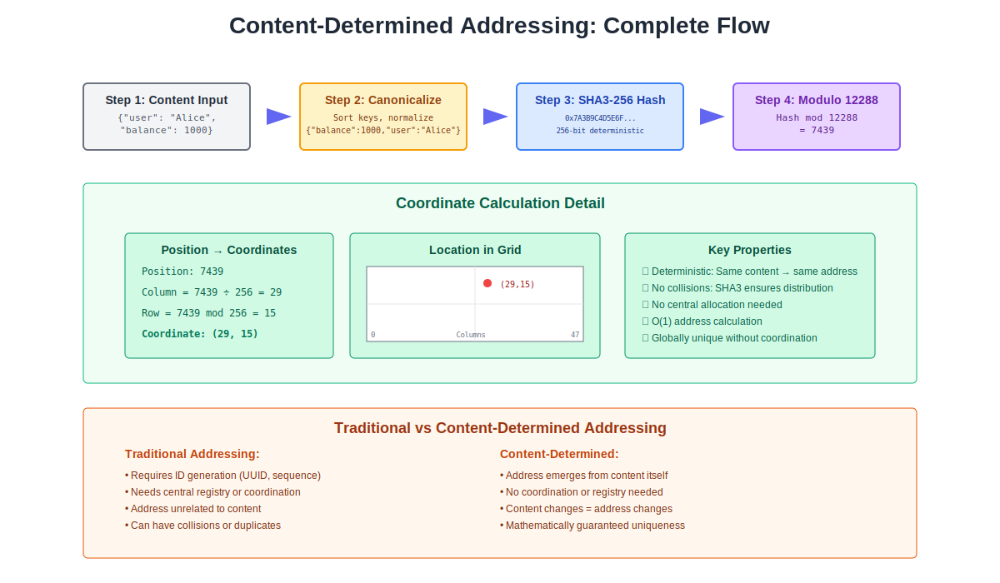

Chapter 3: Content-Determined Addressing

Figure 3.1: Complete flow showing how content determines its own address through hashing and modular arithmetic
The End of Arbitrary Location
Every piece of data in our current systems exists at a location we’ve assigned to it. A customer record sits in row 5,847 of a database table because that’s where the auto-increment counter happened to be when we inserted it. A file lives at /var/data/2025/march/report.pdf because someone decided on that directory structure. A web resource exists at https://api.company.com/v2/customers/12345 because developers designed that URL pattern. None of these locations emerge from the data itself—they’re all arbitrary assignments we must track, manage, and maintain.
Content-determined addressing reverses this fundamental assumption. Instead of assigning locations to data, data determines its own location through its inherent properties. Rather than a new way to assign addresses, this represents the recognition that data already knows where it belongs.
How Content Determines Location
Content → Canonical Form → Hash (SHA3-256) → Mod 12,288 → (page, byte)
Atlas implements a precise technical pipeline that maps content to coordinates:
- Canonical Form: Input content is serialized to a deterministic byte representation
- Hash: SHA3-256 cryptographic digest provides uniform distribution (collisions treated as negligible)
- Modular Projection: Hash modulo 12,288 yields coordinate in address space
- Matrix Mapping: Coordinate maps to (page, byte) as (addr ÷ 256, addr mod 256)
Technical Definitions:
Hash: Cryptographic digest (SHA3-256) used only for uniform distribution across the 12,288 coordinate space. Hash collisions are treated as negligible given the 256-bit output space.
Encode/Decode:
- encode = canonicalize + hash + modular projection
- decode = recompute and verify address from content (no reverse mapping exists)
Storage: Place record at shard addr, or publish cryptographic proof that projection equals addr
Transport: Frames carry (content, addr, class, receipt); routers forward by addr math (no routing tables required)
Concrete Example:
{"user": "alice", "balance": 100.50}
- Canonical JSON:
{"balance":100.5,"user":"alice"} - SHA3-256:
a1b2c3d4...(256-bit hash) - Mod 12,288:
7439 - Matrix:
(page=29, byte=15)where29 = 7439 ÷ 256, 15 = 7439 mod 256
Note: No DNS/lookup needed; address is calculable everywhere
Distribution Properties:
Global uniqueness is by construction relative to the serialization and 12,288 ring. Two byte-identical records map to the same address. Non-identical records may share resonance class but differ in address.
Uniform distribution emerges from SHA3-256 cryptographic properties. Content distributes evenly across all 12,288 coordinates without clustering or load balancing logic.
The 48×256 Matrix Structure
The 12,288 coordinates form a 48×256 matrix structure where each coordinate maps to (page, byte) coordinates: page = addr ÷ 256, byte = addr mod 256. This matrix organization enables efficient sharding and routing algorithms.
The 48-page dimension provides coarse-grained sharding (48 distinct shards), while the 256-byte dimension provides fine-grained addressing within each shard. This two-level addressing enables both horizontal scaling and efficient intra-shard operations.
Every piece of information has a page (0-47) and byte (0-255) coordinate determined by its content hash. Unlike traditional addressing where locations are assigned, the SHA3-256 hash modulo operation mathematically determines the (page, byte) coordinates.
The hash-based distribution provides cryptographically uniform distribution across the matrix. Related information does not cluster—SHA3-256 ensures that similar content maps to statistically independent coordinates, preventing hot spots.
The Elimination of Lookups
In current systems, finding data requires lookups. Given a key, we must consult an index to find the location. Given a URL, we must query DNS to find the server. Given an identifier, we must search through structures to find the data. These lookups are expensive, prone to inconsistency, and require careful maintenance.
Content-determined addressing eliminates lookups entirely. To find data, you simply calculate its coordinate from its content. This calculation is direct—no intermediate steps, no index consultations, no search operations. It’s like knowing that water freezes at 0°C—you don’t look it up; it’s determined by the properties of water itself.
This elimination of lookups has significant effects:
Zero lookup latency because address calculation is a direct SHA3-256 hash plus modulo operation, typically faster than index traversal or DNS resolution.
No index maintenance because the hash function serves as a deterministic, stateless address calculation. No persistent indexes require updating or can become stale.
Perfect cache efficiency because content hash determines address. Identical content always maps to the same coordinate; modified content maps to a different coordinate, eliminating cache invalidation protocols.
Replacing Traditional Addressing Systems
The Death of DNS
The Domain Name System exists because humans can’t remember IP addresses, and IP addresses are themselves arbitrary assignments that can change. DNS is essentially a distributed lookup system that maps human-friendly names to machine-friendly addresses—two layers of arbitrary assignment requiring constant synchronization.
Content-determined addressing makes DNS obsolete. Resources don’t need domain names because their content determines their address. You don’t need to remember or lookup addresses because you can calculate them from what you’re looking for.
Consider searching for a specific document. Currently, you might:
- Remember (or search for) the website URL
- DNS resolves the domain to an IP address
- Navigate to the website
- Search or browse for the document
- Click through to its arbitrary URL
With content-determined addressing, you provide identifying information about the document (title, author, key phrases), and the system calculates exactly where it must be located. No search, no navigation, no arbitrary URLs—just direct calculation from content to location.
The End of File Paths
File systems organize data in hierarchical paths that someone must design and everyone must remember. /home/user/documents/projects/2025/q1/report.pdf tells you nothing about the content—it’s just an arbitrary organizing scheme that made sense to someone at some point.
These paths create numerous problems:
Path dependencies mean moving a file breaks everything that references it. Applications hard-code paths that become invalid. Scripts fail when directory structures change. Users lose files when they can’t remember the path they chose.
Naming conflicts require elaborate schemes to ensure uniqueness. We append numbers (report-1.pdf, report-2.pdf), add timestamps (report-20250315.pdf), or create complex naming conventions that everyone promptly ignores.
Deep hierarchies become navigation nightmares. Users create elaborate folder structures they can’t remember. Applications must traverse multiple levels to find resources. Performance degrades as directories fill with thousands of entries.
Content-determined addressing eliminates paths entirely. Files don’t live in locations you assign—they project to coordinates based on their content. To find a file, you don’t navigate a hierarchy—you calculate its coordinate from identifying information.
Beyond IP Addresses
IP addresses are perhaps the most fundamental arbitrary assignment in our current infrastructure. Every device needs a unique address, requiring careful allocation, management, and coordination. IPv4 exhaustion forced the complex transition to IPv6. NAT created layers of translation. DHCP automated assignment but added complexity.
In a content-addressed system, devices don’t need assigned addresses. Their identity emerges from their properties—their configuration, their role, their relationships. Communication doesn’t require knowing addresses—it requires knowing what you want to communicate with.
This transforms networking from address-based routing to content-based routing. Instead of “send this packet to 192.168.1.1,” you have “send this packet to the database server with these properties.” The network calculates where that server must be based on its identifying characteristics.
Practical Implications
Automatic Load Distribution
Traditional systems require elaborate load balancing schemes. You must monitor load, distribute requests, handle failover, and constantly tune distribution algorithms. Load balancers themselves become bottlenecks and points of failure.
Hash-based addressing provides automatic load distribution. Since SHA3-256 provides cryptographically uniform distribution across all 12,288 coordinates, load balances automatically across physical shards without distribution algorithms.
SHA3-256 provides cryptographically guaranteed uniform distribution. Hot spots are computationally infeasible because clustering would require breaking the hash function’s pseudorandom properties.
Access patterns may vary (some content accessed more frequently), but storage distribution remains cryptographically uniform, providing optimal load balancing for any access pattern.
Inherent Deduplication
Since identical content produces identical SHA3-256 hashes, duplicate content automatically maps to the same coordinate, providing inherent deduplication without additional processing.
Current deduplication systems must:
- Calculate hashes of content
- Maintain deduplication tables
- Handle hash collisions
- Track reference counts
- Garbage collect unreferenced data
Hash-based addressing eliminates deduplication overhead. Identical content hashes to identical coordinates automatically. No reference counting or garbage collection required.
Deduplication operates at the byte level—identical SHA3-256 hashes indicate identical canonical representations. Semantic equivalence requires additional analysis beyond the hash-based addressing.
Universal Resource Location
Every piece of information in a content-addressed system has a universal address that works everywhere. Unlike URLs that are specific to servers, or file paths specific to file systems, or keys specific to databases, content-determined addresses are universal.
This universality means:
No broken links because addresses are hash-derived from content. If content exists, its SHA3-256-based address remains valid regardless of physical location.
No migration complexity because hash-based addresses are location-independent. Physical storage changes don’t affect content-derived coordinates.
No federation protocols because SHA3-256 modulo 12,288 produces identical addresses across all implementations for identical content.
The Network Effects
Peer-to-Peer Becomes Trivial
Current peer-to-peer systems require complex protocols for discovery, coordination, and verification. Peers must announce what they have, search for what they need, and verify what they receive. DHTs (Distributed Hash Tables) try to create distributed addressing but still require overlay networks and careful coordination.
With hash-based addressing, peer-to-peer becomes simplified. Every peer can calculate content addresses using the same hash function. Discovery becomes address calculation—no distributed hash tables or overlay networks required.
Verification is automatic because content modification changes the SHA3-256 hash, changing the address. Content accessible at its calculated address is authentic by construction.
Caching Without Invalidation
“There are only two hard things in Computer Science: cache invalidation and naming things.” Content-determined addressing solves both. Names are addresses, and addresses are determined by content, so naming is automatic. And since addresses only change when content changes, cache invalidation is also automatic.
Traditional caches require version tracking and invalidation protocols to handle content updates at fixed addresses.
In hash-addressed systems, caches hold content at hash-derived coordinates. Content changes produce new hashes and new coordinates—cached entries remain valid indefinitely. No invalidation protocols required.
Automatic Content Delivery
CDNs (Content Delivery Networks) exist to place content closer to users. They require careful decisions about what to cache where, when to update caches, and how to route requests to the nearest copy.
Hash-based addressing enables any node to calculate content coordinates and cache locally. No explicit replication protocols—nodes cache based on calculated addresses.
Routing becomes mathematical: calculate SHA3-256 coordinate, route to nearest shard serving that coordinate. No routing tables or proximity measurements needed.
Security Through Mathematics
Tamper Evidence
In traditional systems, detecting tampering requires separate mechanisms—checksums, digital signatures, audit logs. These mechanisms are add-ons to the basic storage and transmission systems.
Hash-based addressing makes tampering cryptographically evident. Content modification changes SHA3-256 hash, changing address. Serving tampered content at original address is computationally infeasible.
SHA3-256 provides cryptographic certainty that content modification changes addresses. Attackers cannot modify content while preserving its hash-based address.
Access Without Authorization
Traditional authorization systems control who can access what through elaborate permission systems, access control lists, and capability tokens. These systems are complex, prone to misconfiguration, and create single points of failure.
Hash-based addressing enables knowledge-based access control. Since addresses derive from content hashes, access requires knowledge of the exact content needed to calculate the correct SHA3-256-based coordinate.
Access control operates through content knowledge—protecting the exact content representation needed for hash calculation, rather than protecting address lookup mechanisms.
Distributed Trust
Current systems require trust anchors—certificate authorities, DNS roots, key servers. These become targets for attack and points of failure. Trust is hierarchical and brittle.
Hash-based addressing creates cryptographic trust. Content accessible at its SHA3-256-derived address is authentic by construction—no certificate authorities or trust hierarchies required.
Looking Forward
Hash-based addressing transforms information location from assignment to calculation. SHA3-256 modulo 12,288 replaces lookup systems with direct mathematical address derivation.
This shift from assigned to hash-derived addressing eliminates:
- Broken links (hash-based addresses are location-independent)
- DNS hijacking (no lookup resolution required)
- Load balancer configuration (cryptographic distribution)
- Index maintenance (stateless hash calculation)
Hash-based addressing enables:
- Perfect deduplication (identical hashes for identical content)
- Cryptographically uniform load distribution
- Tamper evidence through hash verification
- Universal addressing via standardized hash functions
In the next chapter, we’ll explore how conservation laws provide mathematical guarantees about system behavior, ensuring that the beautiful properties of content-determined addressing are preserved through all transformations and operations. We’ll see how these conservation laws act like the laws of physics for information systems, making certain categories of errors impossible rather than just detectable.